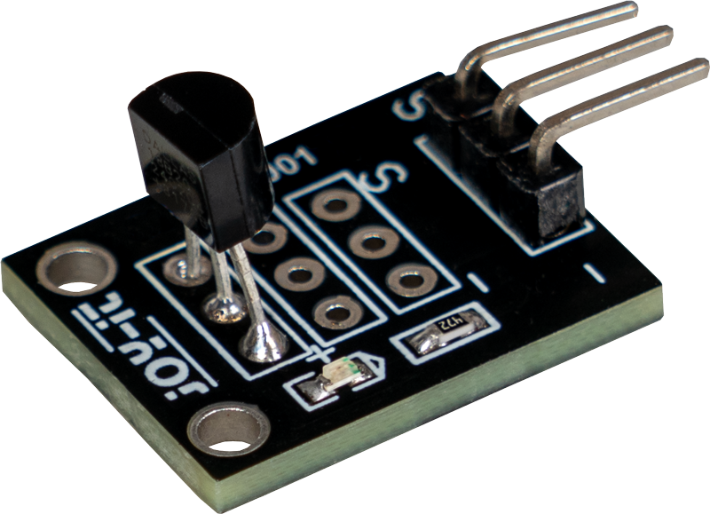
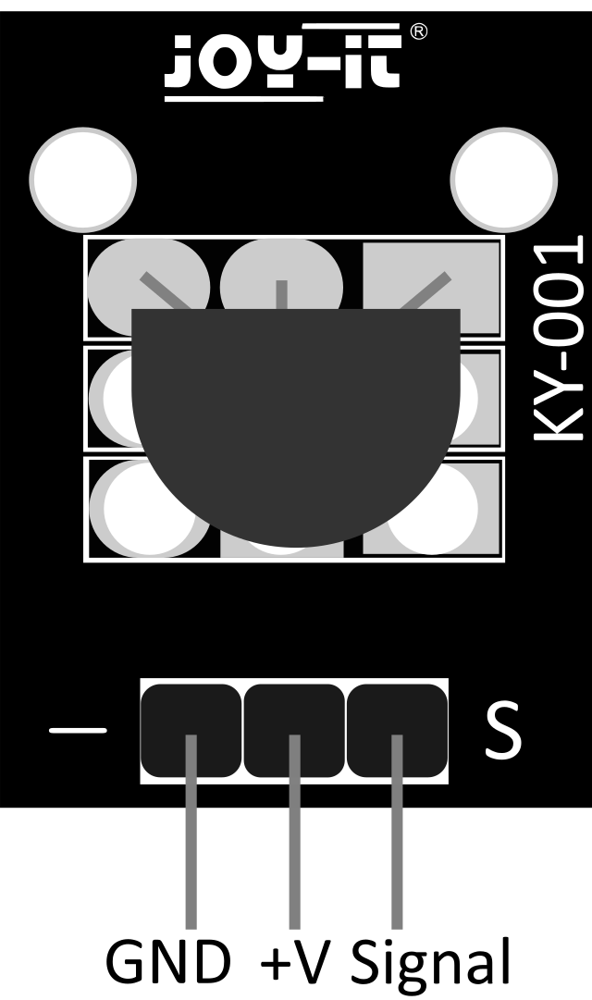
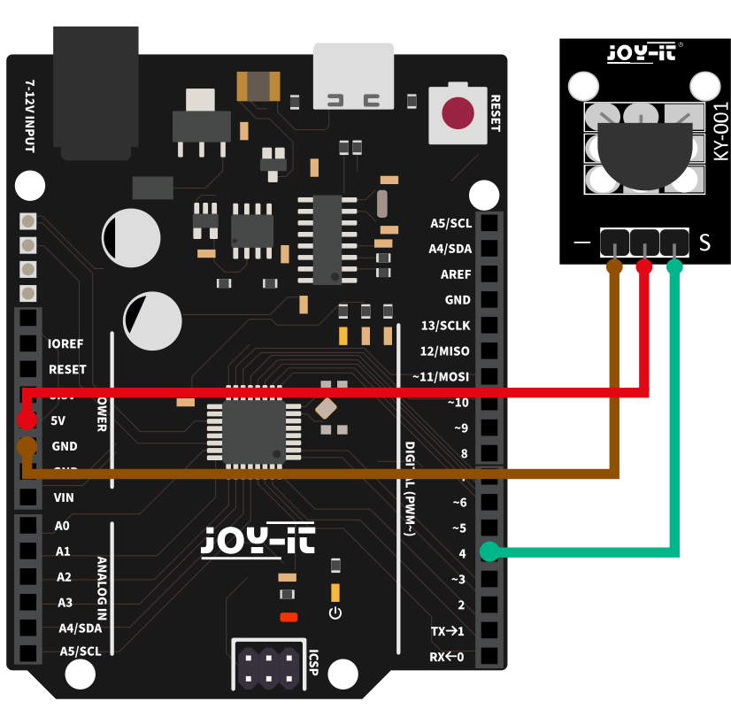

3. Dezember 2026
Eisige Präzision
Wie frostig ist es wirklich? Der digitale DS18B20 verrät die Temperatur präzise und ganz ohne Umrechnen.
Heute im Säckchen
KY-001 Temperatursensor (DS18B20)
Das Digitalthermometer DS18B20 bietet 9-Bit- bis 12-Bit-Celsius-Temperaturmessungen.

Der DS18B20 ist ein digitales Thermometer, das die Temperatur in Celsius messen kann. Es bietet verschiedene Genauigkeitsstufen von 9 bis 12 Bit. Das bedeutet, dass es sehr genaue Messungen liefern kann, wobei eine höhere Bit-Zahl eine genauere Temperaturmessung ermöglicht. Der Messbereich des DS18B20 liegt zwischen -55°C und +125°C, und die Genauigkeit beträgt ±0,5°C im Bereich von -10°C bis +85°C.
Der DS18B20 verwendet einen sogenannten 1-Wire-Bus, um mit einem Mikroprozessor zu kommunizieren. Das bedeutet, dass nur eine einzige Datenleitung benötigt wird, um Informationen auszutauschen. Der Sensor kann sogar seinen Strom über diese Datenleitung beziehen, sodass keine zusätzliche Stromquelle notwendig ist. Diese Betriebsart wird als "parasite power" bezeichnet.
Jeder DS18B20-Sensor hat einen einzigartigen 64-Bit-Seriencode. Dies ist wie eine einmalige Kennnummer für jeden Sensor. Dadurch können mehrere DS18B20-Sensoren an denselben 1-Wire-Bus angeschlossen werden und trotzdem individuell erkannt und ausgelesen werden. Dies ermöglicht die einfache Implementierung von Netzwerken mit mehreren Sensoren.
Dieser Sensor ist besonders nützlich in vielen Anwendungen, wie zum Beispiel in Heizungs-, Lüftungs- und Klimaanlagen (HVAC), zur Temperaturüberwachung in Gebäuden oder Maschinen und in Systemen zur Prozessüberwachung und -steuerung. Weitere Anwendungsgebiete sind medizinische Geräte, industrielle Steuerungssysteme und die Temperaturüberwachung in Kühlsystemen.
Zusammengefasst bietet der DS18B20 eine präzise und flexible Lösung für die Temperaturmessung mit einfacher Verkabelung und der Möglichkeit zur Integration in komplexe Systeme mit mehreren Sensoren.
| Technische Daten | |
|---|---|
| Chipsatz | DS18B20 |
| Kommunikationsprotokoll | 1-Wire |
| Genauigkeit | 9 bis 12 Bit |
| Messbereich | –55°C bis +125°C |
| Messgenauigkeit | ±0.5°C von -10°C bis +85°C |
Anschlussbelegung


| Arduino | Sensor |
|---|---|
| Pin 4 | Signal |
| 5V | +V |
| GND | GND |
Schneemann
Wie geht es dem Schneemann im Garten? Der DS18B20 misst die Temperatur, und das Programm übersetzt sie in Schneemann-Sprache: bis 0 °C stabil, unter 5 °C schmilzt er langsam, darüber bleibt nur eine Pfütze.
Verdrahtung
Wie im Abschnitt zum Bauteil oben: Signal an Pin 4, +V an 5V, GND an GND.
Ablauf
Einmal pro Sekunde erscheint die Temperatur mit dem Zustand des Schneemanns. Zum Testen hältst du das Modul an eine kalte Fensterscheibe oder legst es kurz in einen Gefrierbeutel mit Eiswürfeln. Das Modul ist nicht wasserdicht und darf nicht nass werden.
Bibliotheken
Wie im Artikel: OneWire und DallasTemperature.
Deine Knobelaufgabe
Im Programm fehlt der Inhalt der loop()-Funktion. Die Kommentare darin verraten dir, was passieren soll – programmiere es selbst! Die Auflösung findest du morgen ganz unten auf der Seite von Türchen 4.
// Türchen 3: Schneemann
// Bibliotheken: OneWire, DallasTemperature
#include <OneWire.h>
#include <DallasTemperature.h>
const char ART[] PROGMEM = R"ART(
_===_
( o o )
( > )
( : )
( : )
`---------'
Tuerchen 3: Schneemann
)ART";
#define KY001_Signal_PIN 4
OneWire oneWire(KY001_Signal_PIN);
DallasTemperature sensors(&oneWire);
void setup() {
Serial.begin(9600);
sensors.begin();
Serial.println((const __FlashStringHelper*)ART);
}
void loop() {
// Temperatur messen wie im Artikel und den Zustand des Schneemanns melden:
// bis 0 °C stabil, unter 5 °C schmilzt er, darüber bleibt nur eine Pfütze.
}Grundlagen-Beispiel zu KY-001 Temperatursensor (DS18B20) anzeigen
Code-Beispiel
Um das folgende Codebeispiel auf deinen Arduino zu laden, empfehlen wir die Verwendung der Arduino IDE. In der IDE kannst du den passenden Port und das richtige Board für dein Gerät auswählen.
Es werden für das Codebeispiel auch die folgenden Bibliotheken verwendet:
OneWire Library von Paul Stoffregen | veröffentlicht unter der MIT License
Dallas Temperature Control Library von Miles Burton | veröffentlicht unter LGPL
Diese Bibliotheken kannst du bequem über den Bibliotheken-Manager der Arduino IDE hinzufügen. Kopiere anschließend den unten stehenden Code in deine IDE. Um den Code auf den Arduino hochzuladen, klicke einfach auf den Upload-Button.
// Erforderliche Bibliotheken werden importiert
#include <OneWire.h>
#include <DallasTemperature.h>
// Hier wird der Eingangspin deklariert, an den das Sensormodul angeschlossen wird
#define KY001_Signal_PIN 4
// Bibliotheken werden konfiguriert
OneWire oneWire(KY001_Signal_PIN);
DallasTemperature sensors(&oneWire);
void setup() {
// Initialisierung des seriellen Ausgangs
Serial.begin(9600);
Serial.println("KY-001 Temperaturmessung");
// Sensor wird initialisiert
sensors.begin();
}
// Hauptprogrammschleife
void loop()
{
// Temperaturmessung wird gestartet...
sensors.requestTemperatures();
// ... und die gemessene Temperatur wird ausgeben
Serial.print("Temperatur: ");
Serial.print(sensors.getTempCByIndex(0));
Serial.println(" °C");
delay(1000); // 1s Pause bis zur nächsten Messung
}Lösung für Tag 2 anzeigen
// Auflösung zu Türchen 2: Kerzenschein
const char ART[] PROGMEM = R"ART(
,
(\
)/
|~~|
| |
| |
__|__|__
(________)
Tuerchen 2: Kerzenschein
)ART";
const int photo_resistor = A5; // KY-018
// Widerstand des Fotowiderstands in Ohm: dunkel = groß, hell = klein.
// Zwei Schwellen (Hysterese), damit die Meldung in der Dämmerung nicht flackert.
const float DUNKEL_AB = 20000.0;
const float HELL_AB = 10000.0;
bool dunkel = false;
void setup() {
Serial.begin(9600);
Serial.println((const __FlashStringHelper*)ART);
}
void loop() {
int rawValue = analogRead(photo_resistor);
float voltage = rawValue * (5.0 / 1023) * 1000; // in mV, wie im Artikel
float resistance = 10000 * (voltage / (5000.0 - voltage));
if (!dunkel && resistance > DUNKEL_AB) {
dunkel = true;
Serial.println("Es wird dunkel. Zeit, die Adventskerze anzuzünden!");
} else if (dunkel && resistance < HELL_AB) {
dunkel = false;
Serial.println("Hell genug. Die Kerze darf eine Pause machen.");
}
Serial.print("Widerstand: ");
Serial.print(resistance, 0);
Serial.println(" Ohm");
delay(500);
}